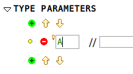

| Theory Plug-in User Manual |
| Theory Plug-in User Manual |
Type parameters in a theory specify the type on which new definitions and rules may be polymorphic. For instance, a theory of sequences can be polymorphic on one type and that is the type of elements it may hold.
Type parameters are similar in nature to carrier sets in contexts. To create a new type parameter, click on button under the Type Parameters section of the structured editor, and specify the name of the type parameter (see Figure 4).

| Theory Plug-in User Manual |